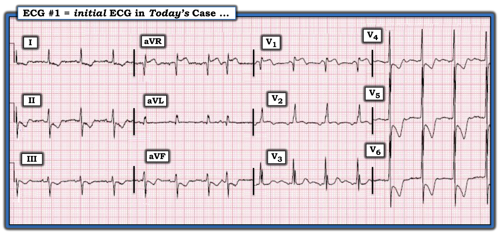
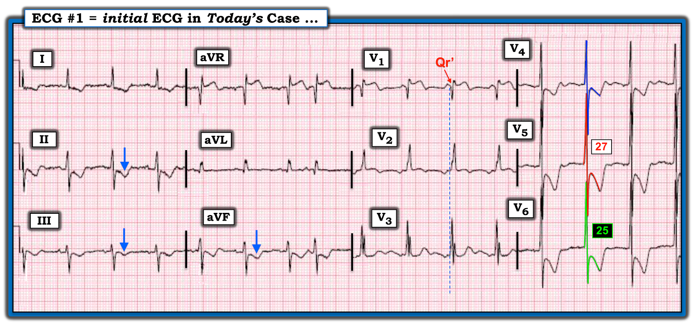

ECG Blog #383 — Đây có phải bệnh mạch vành không?
======================================
Xin LƯU Ý:
- Sau hôm nay — sẽ không có bài ECG Blog mới trong 2 đến 3 tuần ...
- — Tôi cũng sẽ không trả lời email kịp thời ...
======================================
Toàn bộ tài liệu trên trang ECG Blog này vẫn mở!
- Thẻ INDEX (ở góc trên bên phải mỗi trang) — có Mục lục kèm liên kết, sắp xếp theo chủ đề. Vì vậy NẾU bạn đang tìm tài liệu về điện tâm đồ — Trang web này có rất nhiều!
- NẾU bạn cuộn xuống một chút ở cột bên phải của blog này — Bạn sẽ thấy rất nhiều biểu tượng. Trong đó có liên kết tới các Audio Pearls (hơn 50 bài) của tôi — các Video Pearls (18 bài) của tôi — các Bình luận của tôi trên Dr. Smith's ECG Blog (hơn 500 bình luận! — cuộn xuống cuối mỗi bài blog để xem) — và hơn 80 giản đồ bậc thang chi tiết.


==============================
ECG Blog #383 — Đây có phải bệnh mạch vành không?
==============================
Điện tâm đồ ở Hình 1 — được ghi ở một người đàn ông 70 tuổi, trước đây khỏe mạnh, đến ED (khoa Cấp cứu — Emergency Department) vì CP (đau ngực — Chest Pain) mới xuất hiện.
- BẠN sẽ diễn giải bản ghi này thế nào?
- Bạn có nên kích hoạt phòng thông tim (cath lab) không? (tức là, ST chênh lên ở chuyển đạo V1 — kèm các thay đổi ST-T ở các chuyển đạo trước tim bên có gợi ý "xoáy" trước tim (Precordial "Swirl") do tắc đoạn gần LAD không, như đã bàn trong ECG Blog #380)?


SUY NGHĨ CỦA TÔI về điện tâm đồ ban đầu:
Tôi thấy điện tâm đồ #1 vừa hấp dẫn vừa hơi kỳ lạ ...
- Nhìn chung, nhịp có vẻ là nhịp xoang khá đều kèm một PAC — dù sóng P ở chuyển đạo II rất nhỏ. Sóng P có lẽ thấy rõ nhất ở chuyển đạo V2, điều này bất thường với nhịp xoang — nên có thể đây là nhịp nhĩ lạc chỗ.
- Nhìn chung các khoảng (PR, QRS, QTc) có vẻ bình thường. Dù vậy — việc không có sóng P rõ ràng ở chuyển đạo II khiến khó đánh giá khoảng PR — và — QRS trông hơi rộng ở chuyển đạo V3, dù thời gian QRS có vẻ không vượt quá 0.10 giây ở bất kỳ chuyển đạo nào.
- Trục mặt phẳng trán hơi lệch trái (tức là, QRS âm nhiều hơn dương ở chuyển đạo aVF) — nhưng chưa lệch trái đủ để đạt tiêu chuẩn LAHB (tức là, QRS ở chuyển đạo II không âm ưu thế).
Về Lớn các buồng tim:
- Có LVH rõ rệt! Như thể hiện ở Hình 2 qua việc tô màu các phức bộ QRS ở chuyển đạo V4,V5,V6 — có nhiều chồng lấn, với biên độ QRS tăng rõ rệt ở các chuyển đạo này (tức là, sóng R tô màu ĐỎ ở chuyển đạo V5 = 27 mm — và sóng R tô màu XANH LÁ ở chuyển đạo V6 = 25 mm).
Về Thay đổi Q-R-S-T:
- Có một sóng Q nhỏ ở chuyển đạo aVL — và một sóng Q rất lớn ở chuyển đạo V1.
- Về tăng tiến sóng R — vùng chuyển tiếp sớm! Nghĩa là, sóng R ưu thế đã thấy ngay từ chuyển đạo V2.
- Có điểm J và ST chênh xuống rõ rệt (≥3 mm ở chuyển đạo V5,V6 — với mức ST chênh xuống ít hơn ở 4 chuyển đạo chi và ở chuyển đạo V3,V4). Đoạn ST dốc xuống — kết thúc bằng sóng T đảo ngược đối xứng, sâu ở các chuyển đạo dưới và các chuyển đạo trước tim bên.
- Có ST chênh lên 2 mm ở chuyển đạo V1 — với đoạn ST dạng vòm (coving) và thoáng chênh lên ở chuyển đạo V2 kế bên.
Tổng hợp lại tất cả:
Như đã nói — tôi thấy bản ghi hôm nay hấp dẫn, nhưng hơi kỳ lạ!
- Điều chúng ta biết — là nhịp ở điện tâm đồ #1 khá đều và là nhịp trên thất (có lẽ là nhịp xoang kèm một PAC — dù không thấy rõ sóng P dương ở chuyển đạo II).
- Có LVH rõ rệt — với sóng R ưu thế ở từng chuyển đạo trước tim bên. Sóng ST-T.
- Có thay đổi ST-T sâu sắc. Một phần ST chênh xuống kèm sóng T đảo ngược sâu ở các chuyển đạo trước tim bên rõ ràng phản ánh "tăng gánh" thất trái (LV "strain") do LVH rõ rệt — nhưng dù biên độ QRS rất lớn, hình dạng ST-T này trông không tương xứng, gợi ý ít nhất có một thành phần thiếu máu cục bộ.
- Tuy nhiên — LVH và bệnh mạch vành thiếu máu cục bộ không giải thích được ST-T chênh xuống ở các chuyển đạo dưới (mũi tên XANH DƯƠNG ở chuyển đạo II,III,aVF) — hình ảnh này thường gặp hơn nhiều như một dấu hiệu của "tăng gánh" thất phải (RV "strain") cấp.
- Tuy vậy — điện tâm đồ #1 không đặc biệt gợi ý RVH. Không thấy sóng P ở các chuyển đạo dưới cao, nhọn và đỉnh sắc của RAA (bất thường nhĩ phải — Right Atrial Abnormality) — dù điều này có thể do nhịp không phải nhịp xoang (tức là, Như đã nói ở trên — không thấy sóng P xoang dương rõ ràng ở chuyển đạo II). Không có trục lệch phải — và không có sóng R ưu thế ở chuyển đạo V1. Sóng S tồn tại ở chuyển đạo V6 sâu tới 13 mm là sâu hơn bình thường — nhưng riêng điều này không đủ tiêu chuẩn RVH.
Và rồi — còn có hình dạng Qr' ở chuyển đạo V1 kèm ST chênh lên:
- Hình dạng Qr' ở chuyển đạo V1 kèm ST chênh lên là phần khó giải thích nhất đối với tôi trong bản ghi hôm nay.
ĐIỂM THEN CHỐT (PEARL) #1:
Tôi muốn điện tâm đồ của mình "kể một câu chuyện". Ý tôi là mọi dấu hiệu điện tâm đồ qua các bản ghi liên tiếp và qua diễn tiến đánh giá bệnh nhân đều hợp lý khi đối chiếu lâm sàng với bệnh sử và khám thực thể.
- Qr' ở chuyển đạo V1 không giống dẫn truyền RBBB đơn thuần. QRS không đủ rộng để là RBBB hoàn toàn — và các chuyển đạo chi bên I và aVL đều không có sóng S tận.
- Trước đây tôi đã bàn về mối liên hệ thú vị của hình dạng qR ở chuyển đạo V1 ở bệnh nhân RVH — gợi ý mạnh có kèm tăng áp phổi (Xem ECG Blog #234 và Blog #248). Tuy nhiên, ca hôm nay không có sóng R ưu thế ở chuyển đạo V1 — và không có bằng chứng điện tâm đồ nào khác của RVH rõ ràng.
- Rồi còn ST chênh lên đáng kể mà ta thấy ở chuyển đạo V1 ... Nhưng việc ST chênh lên chỉ giới hạn ở một chuyển đạo là không phù hợp với bất kỳ vùng phân bố nào của STEMI.
- Và rồi — NẾU ta "quên" sóng Q ban đầu ở chuyển đạo V1, mà chỉ tập trung vào r' với ST chênh lên dốc lên — Chẳng phải hình dạng của r' này, theo sau là ST chênh lên dốc lên với sóng T dương, giống hình yên ngựa (saddleback) của hình ảnh Brugada típ 2 trên điện tâm đồ sao (Xem ECG Blog #238 — để ôn lại các hình ảnh Brugada và kiểu hình sao chép (Phenocopy)).
- Cuối cùng — có một "bướu" dương ban đầu trông kỳ lạ ngay trước sóng Q ở chuyển đạo V1. Tôi không biết nó biểu hiện điều gì, vì "bướu" dương nhỏ này xuất hiện trước QRS (Đường chấm dọc màu XANH DƯƠNG ở Hình 2 đánh dấu điểm khởi đầu QRS) — nhưng lại sau điểm khởi đầu của sóng P thấy rõ ở chuyển đạo V2.
- ĐIỀU CỐT LÕI: Tôi không thể nghĩ ra bất kỳ "câu chuyện" hợp lý nào để gắn kết mọi dấu hiệu điện tâm đồ của bản ghi hôm nay với bệnh sử hạn chế được cung cấp là "CP mới xuất hiện". Tôi sẽ không hề ngạc nhiên nếu bệnh nhân được thông tim sớm — vì bệnh nhân đã đến viện vì CP mới xuất hiện — và điện tâm đồ này có ST-T chênh xuống rõ rệt — nhưng tôi tin chắc rằng hẳn phải có "điều gì khác" đang diễn ra.


Ca bệnh tiếp diễn:
Hình dạng kỳ lạ của phức bộ QRST ở chuyển đạo V1 không phải do đặt sai vị trí điện cực (Các điện tâm đồ ghi lại sau khi kiểm tra vị trí điện cực cũng tương tự).
- Tôi không bao giờ được xem bản ghi trước đó — điều có thể rất hữu ích để giải thích bản ghi hiện tại khác thế nào so với điện tâm đồ nền của bệnh nhân này.
- Thông tim cho thấy các động mạch vành thông tốt!
- Kết quả siêu âm tim ở bệnh nhân này rất có giá trị! Siêu âm cho thấy chức năng thất trái giảm — LVH đồng tâm đáng kể — nhĩ trái giãn — hẹp van động mạch chủ nặng (dường như cần thay van sớm) — và ít nhất tăng áp phổi mức độ vừa, dẫn tới hở van động mạch phổi mức độ vừa.
- Kế hoạch là tiến hành thay van động mạch chủ càng sớm càng tốt. Thật không may — bệnh nhân đột ngột giảm oxy máu, sau đó ngừng tim với hoạt động điện vô mạch (PEA). Bệnh nhân không hồi sức được.
ĐIỂM THEN CHỐT (PEARL) #2: Dù việc hồi cứu "nhìn lại" sau khi bệnh nhân tử vong luôn khó khăn, cố gắng hiểu rõ hơn những gì đã xảy ra — làm vậy lại vô cùng hữu ích để rút kinh nghiệm, với hy vọng tối ưu hóa việc chăm sóc về sau.
- Có vẻ như trong lúc nằm chờ ở khoa phòng để quyết định phương án thay van động mạch chủ tối ưu — bệnh nhân đã tự ngậm một viên NTG (nitroglycerin) dưới lưỡi. Như có thể xảy ra với AS (hẹp van động mạch chủ — Aortic Stenosis) khít — tác dụng giãn mạch của NTG có thể làm huyết áp tâm thu giảm thêm. Người ta cho rằng chính điều này đã thúc đẩy tình trạng giảm độ bão hòa oxy của bệnh nhân, và dẫn đến ngừng tim.
- Ở bệnh nhân bệnh van tim nặng (như AS khít của bệnh nhân này) — việc phát hiện tăng áp phổi đáng kể (như đã thấy trên siêu âm tim của bệnh nhân này) — thường cho thấy tình trạng mất bù, trong đó cơ chế bù trừ của thất trái và nhĩ trái không còn ngăn được việc áp lực nhĩ trái tăng truyền ngược (về tuần hoàn phổi). Có thể đến lúc mà ngay cả khi đã thay van — tăng áp phổi vẫn tồn tại, và đây là một chỉ dấu của tiên lượng dài hạn xấu (Maeder và cs. — Frontiers in Cardiovasc Med 5(40):1-15, 2018).
Các dấu hiệu điện tâm đồ trong bản ghi hôm nay giờ đã hợp lý!
Khi đã biết thông tim không thấy bệnh mạch vành đáng kể — và siêu âm tim cho thấy hẹp van động mạch chủ khít kèm giảm chức năng thất trái và tăng áp phổi đáng kể — các dấu hiệu điện tâm đồ trong bản ghi hôm nay giờ đã hợp lý!
- AS nặng là nguyên nhân thường gặp của LVH rõ rệt kèm "tăng gánh" thất trái (LV "strain") trên điện tâm đồ. Điều này giải thích biên độ QRS tăng rõ rệt ở các chuyển đạo trước tim bên — cũng như một phần ST-T chênh xuống ở các chuyển đạo này.
- Trong khi ST-T chênh xuống quá mức ở các chuyển đạo trước tim bên có lẽ phản ánh một thành phần thiếu máu cục bộ chồng lên LVH rõ rệt của bệnh nhân — thì sóng T đảo ngược ở các chuyển đạo dưới (mũi tên XANH DƯƠNG ở chuyển đạo II,III,aVF của Hình 2) phù hợp với "tăng gánh" thất phải (RV "strain").
- Trong bối cảnh "tăng gánh" thất phải — hình dạng Qr' ở chuyển đạo V1 nhiều khả năng nhất phản ánh tăng áp phổi đáng kể của bệnh nhân này (Xem ECG Blog #248).
- Tôi nghi rằng ST chênh lên hình yên ngựa (saddleback) mà ta thấy khu trú ở chuyển đạo V1 có thể phản ánh hình ảnh kiểu hình sao chép Brugada típ 2 (Brugada-2 Phenocopy) (Xem ECG Blog #238) ở bệnh nhân mất bù huyết động này.
- Có lẽ "bướu" dương nhỏ xuất hiện ngay trước phức bộ QRS ở chuyển đạo V1 phản ánh một hiện tượng tương tự như có thể thấy trong dấu hiệu mũ chóp nhọn (Spiked Helmet Sign) — trong đó, khi có tình trạng catecholamine nội sinh quá mức (như có thể xảy ra ở bệnh nhân suy giảm huyết động) — đường đẳng điện có thể nâng lên phần nào, bắt đầu từ trước phức bộ QRS (Xem ECG Blog #310).
======================================
"Điều cần nhớ" rút ra từ ca hôm nay (Take-Home Lessons):
Đây không phải là một ca đơn giản! Như tôi đã nhấn mạnh — Điện tâm đồ phức tạp này ban đầu không hợp lý với tôi cho đến khi tôi biết thêm về bệnh sử lâm sàng.
- Những điểm "cần nhớ" quan trọng nhất của ca hôm nay — không nằm ở các dấu hiệu điện tâm đồ phức tạp này — mà là nhấn mạnh sự cần thiết phải đối chiếu lâm sàng các dấu hiệu điện tâm đồ. Nhiều điện tâm đồ "kể một câu chuyện" — và cần nhận ra: i) Rằng dù bệnh nhân đến viện vì đau ngực mới xuất hiện (và dù có ST-T chênh xuống sâu ở các chuyển đạo trước tim bên) — đây không phải ACS (đây không phải hội chứng vành cấp — Acute Coronary Syndrome); ii) Có LVH rõ rệt; và, iii) Rằng sóng T đảo ngược ở các chuyển đạo dưới và Qr' kèm ST chênh lên ở chuyển đạo V1 hướng tới "tăng gánh" thất phải (RV "strain") kèm tăng áp phổi — điều này, cùng với hẹp van động mạch chủ khít của bệnh nhân, giải thích bệnh lý chính. Bệnh nhân này cần được thay van động mạch chủ sớm. Dù đội ngũ điều trị đã nhận ra điều này — không may bệnh nhân đã tử vong trước khi kịp thực hiện.

==================================
Lời cảm ơn: Xin cảm ơn 林柏志 (Đài Loan) đã giới thiệu ca bệnh này và cho phép tôi sử dụng bản ghi này.
==================================
Các bài ECG Blog liên quan (đến ca hôm nay):
- ECG Blog #205 — Ôn lại Cách tiếp cận hệ thống của tôi khi đọc điện tâm đồ 12 chuyển đạo.
- ECG Blog #380 — Ôn lại thế nào là "xoáy trước tim" (Precordial Swirl) (RẤT NHIỀU liên kết tới các bài blog về nhiều khía cạnh của OMI/thiếu máu cục bộ cấp).
- ECG Blog #234 — và ECG Blog #248 — Ôn lại chẩn đoán RVH trên điện tâm đồ và hình dạng qR giúp nhận biết tăng áp phổi.
- ECG Blog #77 — Ôn lại tiêu chuẩn điện tâm đồ chẩn đoán RVH và "tăng gánh" thất phải (RV “Strain”).
- ECG Blog #75 — Ôn lại tiêu chuẩn điện tâm đồ chẩn đoán RAA & LAA.
- ECG Blog #233 — Ôn lại chẩn đoán điện tâm đồ PE (thuyên tắc phổi — Pulmonary Embolism) cấp.
- ECG Blog #156 — Ôn lại một ca tứ chứng Fallot ở người lớn (với RAA rõ rệt, RVH, tăng áp phổi).
- ECG Blog #310 — Ôn lại dấu hiệu mũ chóp nhọn (Spiked Helmet Sign)! (Thừa catecholamine).
- ECG Blog #238 — Ôn lại các hình ảnh Brugada và kiểu hình sao chép (Phenocopy).
Một ví dụ RVH ở một phụ nữ 21 tuổi:
- Xem Bình luận của tôi ở CUỐI trang trong bài ngày 1 tháng 9 năm 2020 trên Dr. Smith’s ECG Blog (trong đó tôi bình luận chi tiết ca thứ 1 trong 6 ca mà Dr. Smith trình bày).
- ECG Blog #245 — Ôn lại cách đánh giá LVH trên điện tâm đồ.
- ECG Blog #73 — Ôn lại "quan điểm của tôi" về chẩn đoán LVH trên điện tâm đồ.
- ECG Blog #92 — Trình bày một góc nhìn khác về chẩn đoán LVH trên điện tâm đồ.
- ECG Blog #75 — Ôn lại "quan điểm của tôi" về chẩn đoán LAA & RAA trên điện tâm đồ.
- ECG Blog #234 — Ôn lại "quan điểm của tôi" về chẩn đoán RVH trên điện tâm đồ.
- Bài ngày 4 tháng 11 năm 2018 trên Dr. Smith's ECG Blog — Bình luận của tôi (ở cuối trang) ôn lại 3 manh mối điện tâm đồ giúp nhanh chóng nhận biết việc đặt sai vị trí điện cực V1,V2.
- Bài ngày 31 tháng 3 năm 2019 trên Dr. Smith's ECG Blog — Bình luận của tôi (ở cuối trang) minh họa tác động có thể gây nhầm lẫn của điện tâm đồ trước viện ở bệnh nhân LVH (tức là, do cắt mất điện thế sóng S ở các chuyển đạo trước).
- Bài ngày 29 tháng 3 năm 2019 trên Dr. Smith's ECG Blog — Bình luận của tôi về Bản ghi A (ở cuối trang) minh họa việc LVH là một hình ảnh giả thường gặp của thiếu máu cục bộ cấp.
- Bài ngày 27 tháng 12 năm 2018 trên Dr. Smith's ECG Blog — Bình luận của tôi (ở cuối trang) minh họa một ca có ST chênh lên do LVH ở thành trước có thể gợi ý sai là nhồi máu thành trước cấp.